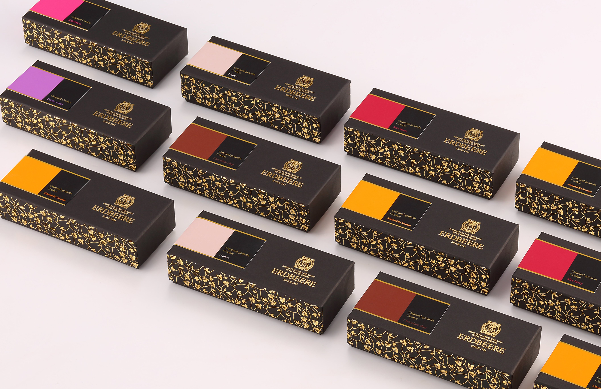
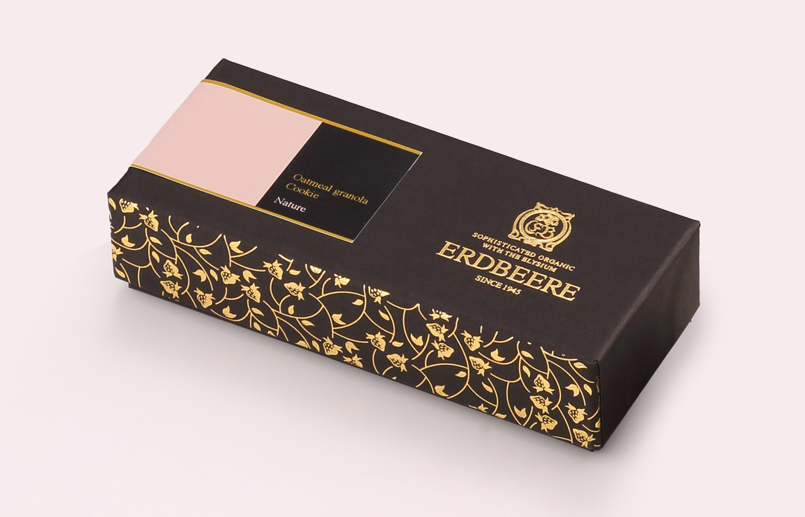
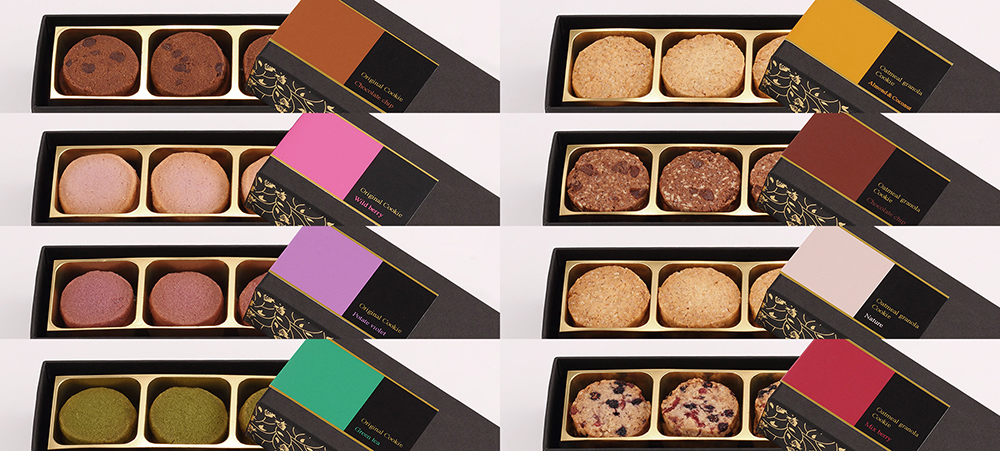
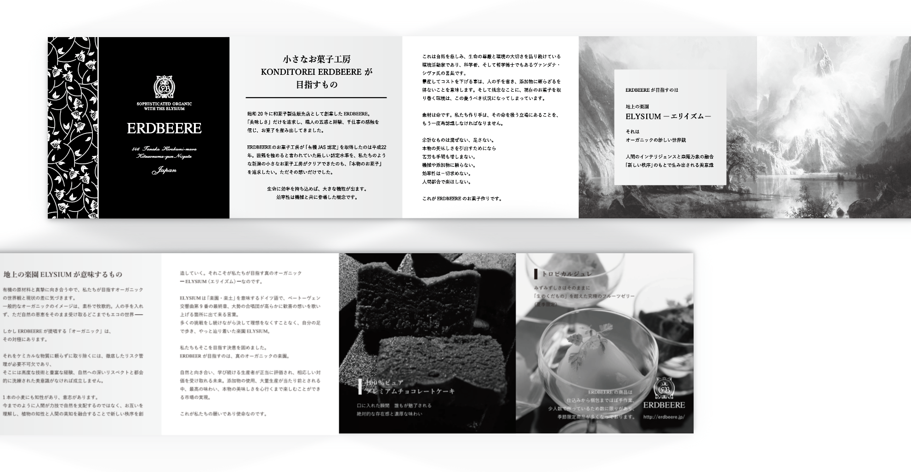

KONDITOREI ERDBEERE オーガニッククッキー
コンディトライ・エルトベーレ
パッケージ / リーフレット
2015. 09




パッケージ / リーフレット
2015. 09
日本で初めて洋菓子工房として有機ＪＡＳを取得した工房でもあるERDBEEREのオーガニッククッキーのパッケージのリニューアルおよび、ブランドコンセプトを説明するために内封するミニリーフレットを制作しました。
文明化が進んだ昨今、オーガニックの製品を作るには、大きなコストと繊細な技術が必要になる。そんな事実を世間に周知させたいというコンセプトのもと、オーガニックの持つ牧歌的なイメージを排除し、あえて高級感を強く打ち出した様相のパッケージとしました。
また、ERDBEEREはドイツ語でイチゴの意味。そこから、側面にはイチゴをモチーフとしたパターンを配置し、華やかさの演出としました
＜ BACK
© Moeri Ito